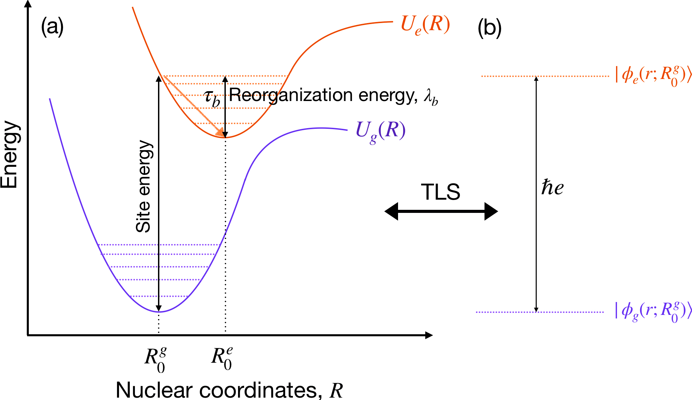
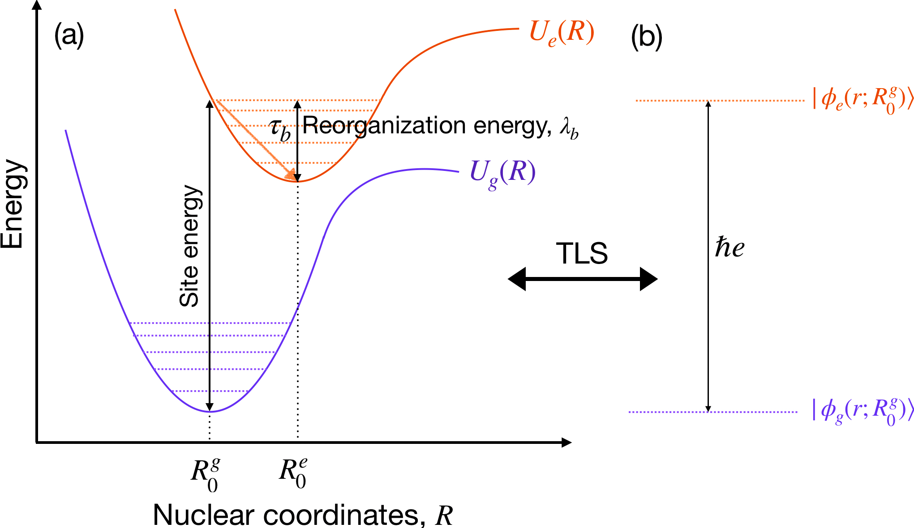

Welcome!
I am a Ph.D. graduate from the Department of Energy Science and Engineering at Indian Institute of Technology Bombay (India), worked under the supervision of Prof. Karthik Sasihithlu. My research lies at the intersection of quantum many-body physics, open quantum systems, and energy transfer in complex molecular networks, with a particular focus on photosynthetic light-harvesting complexes.
Beyond biological systems, I am expanding my interests toward cavity quantum electrodynamics (QED) and polaritonic transport, aiming to understand and control light–matter hybrid states in the strong-coupling regime. This direction bridges fundamental quantum science with potential applications in quantum technologies and energy-efficient nanoscale devices.
I am passionate about translating quantum theory into predictive models that connect physics, chemistry, and biology, while also creating computational frameworks that can be extended to a variety of complex quantum systems. I am looking for postdoctoral or industrial research opportunity.
Download CV (PDF)Email: upadhyay[dot]amit1996[at]gmail[dot]com | LinkedIn
Research Highlights

 

Research Interests
- Electronic excitation dynamics in quantum photosynthesis.
- Open quantum systems theory and environment-assisted transport.
- Quantum coherence and energy transfer efficiency.
- Polaritonic and cavity-mediated transport phenomena.
- Quantum phase transition and information.
Publications
- A. K. Upadhyay and K. Sasihithlu, “Analyzing Coherence Effects in Multisite Electronic Excitation Transport Using the Incoherent Born-Markov Rate Model.” J. Phys. Chem. B 2025, 129, 11387-11394.
- A. K. Upadhyay and K. Sasihithlu, “Electronic Excitation Transfer Dynamics in a 3-Site System Using an Incoherent Born-Markov Rate Model.” ChemPhysChem 2025, 26, e202500029.
- A. K. Upadhyay and K. Sasihithlu, “Tunability in 3-Site Electronic Excitation Transfer Dynamics: Insights into the Role of Perturbative Coupling.” J. Phys. Chem. B 2024, 128, 4047-4052.
Education
- M.Sc. + Ph.D. Dual Degree in Energy Science and Engineering, IIT Bombay (2017–2025)
- B.Sc. (Hons) in Physics, Atma Ram Sanatan Dharma College, University of Delhi (2014-2017)
- HSC (12) and SSC (10), Jawahar Navodaya Vidyalaya, Rudrapur (2011-2014)
Research Experience
- Research Associate in Energy Science and Engineering, IIT Bombay (May 2025 – November 2025)
Conferences
- Youth Scientist Conclave on Topics in Quantum Dynamics, at IIT Bombay (Mumbai) (July 2024)
- International Conference on Quantum, Atomic, and Molecular Physics at University of Strathclyde, Glasgow (UK) (September 2023)
- Quantum coherent dynamics: turbulence, non-equilibrium and interactions, at Institut d'Estudis Catalans, Barcelona (Spain) (September 2023)
- International Conference on Photonics, at IISc Bangalore (Bengaluru) (July 2023)
- International Conference on Progress in Quantum Science and Technologies, at IIT Madras (Chennai) (January 2023)